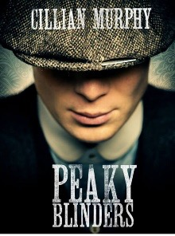

Peaky Blinders
8.8/10 | 2013 | Drama/Romance

- En Gran Bretaña, Reino Unido se recuperan de la desesperación de la Gran Guerra, las personas sobreviven a como pueden, y las bandas criminales proliferan en una nación sacudida económicamente. Es justamente aquí donde una familia de gánsteres irlandeses de origen nómada (a veces llamados gitanos o chatarreros) asentada en Birmingham (los Peaky Blinders) justo después de la Primera Guerra Mundial, dirigen un local de apuestas hípicas en la ciudad. Las acciones del ambicioso, respetado, temerario y peligroso jefe de la banda, Thomas Shelby, llaman la atención del Inspector jefe Chester Campbell, un detective de la Real Policía Irlandesa que es enviado por el mismo Winston Churchill desde Belfast donde había sido enviado a limpiar la ciudad del Ejército Republicano Irlandés (IRA), comunistas, pandillas y delincuentes comunes.
- Director: Steven Knight
- Writer: Steven Knight
- Stars: Cillian Murphy · Paul Anderson · Helen McCrory